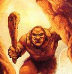

Vin Ahrr Vin

Middleclaw
Quoghmyre

Dekhurrrsio
a pack with all sorts of gear
coil of silk rope (in pack)
Up: Main
Previous: Scene Three |
Next: Scene Five
|
Vin Ahrr Vin |
Middleclaw |

Quoghmyre |
Dekhurrrsio |
|---|---|---|---|
| Naked! | Naked! | Two 50 pound boulders (10d6) | crossbow a pack with all sorts of gear coil of silk rope (in pack) |
|
Vin Ahrr Vin |
Middleclaw |
Quoghmyre |
Dekhurrrsio |
|---|---|---|---|
| Naked! | Naked! | Two 50 pound boulders (10d6) | crossbow a pack with all sorts of gear coil of silk rope (in pack) |
Up: Main
Previous: Scene Three |
Next: Scene Five